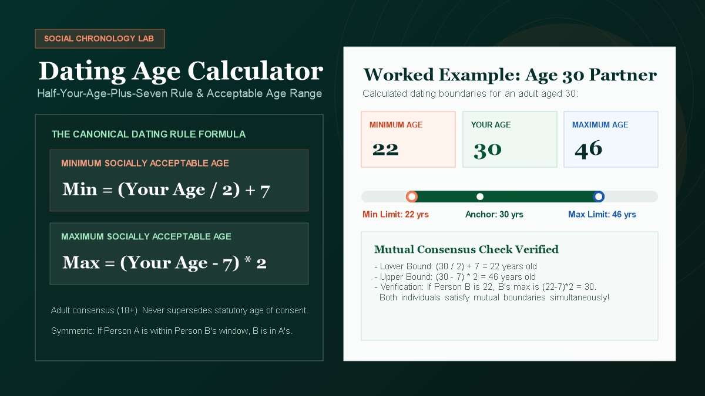

Dating Age Calculator
Enter your age and this calculator applies the half-your-age-plus-seven rule, returning the youngest and oldest partner ages it allows, plus a two-person symmetry check.

Evaluate Dating Age Range
Calculations run 100% locally in your browser. No private relationship inputs are transmitted to external servers.
How to use it
Your age
Enter your age in whole years. The rule is for adults, so ages under 18 get a warning and the minimum never drops below 18.
Read your range
The calculator shows the youngest and oldest ages the rule allows for you.
Compare two people
Switch to the two-person check to test whether each person falls inside the other’s range.
Worked example
A 36-year-old, single-person check. Enter 36 above and the calculator returns the same range.
- Minimum: 36 ÷ 2 + 7 = 25.
- Maximum: (36 − 7) × 2 = 58.
- Range: 25 to 58 years old. The window is 33 years wide.
- Symmetry check: a 28-year-old’s range is 21 to 42. 36 falls inside it, and 28 falls inside 25 to 58, so the pair passes both ways.
Result: At 36, the rule allows partners aged 25 to 58.
How it is calculated
Minimum age = your age ÷ 2 + 7, rounded down to a whole year. Maximum age = (your age − 7) × 2. The two formulas are inverses of each other, which is why the rule is symmetric.
- The minimum is rounded down. At 36, 36 ÷ 2 + 7 is exactly 25; at 37 it is 25.5, rounded down to 25.
- If you are 18 or older and the formula gives a minimum below 18, the calculator raises it to 18.
- Symmetry: if A falls inside B’s range, B falls inside A’s range too. The two-person check tests exactly that.
- The rule is a social heuristic, not a law and not a scientific standard. It says nothing about consent, health or compatibility.
- Origin: the rule appeared in print at least as early as 1901, in French author Max O’Rell’s book Her Royal Highness Woman, as advice that a man should marry a woman half his age, plus seven. (Dictionary.com)
- Research note: Buunk and colleagues (2001, Evolution and Human Behavior) asked people aged 20, 30, 40, 50 and 60 for the youngest and oldest partners they would consider. A later analysis of that data found the minimum roughly fits men’s stated preferences for serious relationships, while the maximum is far more generous than what most people say they would accept. See the study (DOI 10.1016/S1090-5138(01)00065-4).
Remember: The rule is a social heuristic, not a law. It never overrides age-of-consent laws, and it says nothing about whether a relationship is healthy or right.
Reading your result
The calculator returns the range and the symmetry result. Each row has a single job.
- Minimum age: The youngest partner age the rule allows for you.
- Maximum age: The oldest partner age the rule allows for you.
- Your age: The anchor age you entered. The range is built around it.
- Range width: Maximum minus minimum. At 36 it is 33 years; the window widens as you get older.
- Symmetry result: Whether each person in a two-person check falls inside the other’s range.
At a glance
Range bar for age 36. The green span is the rule’s acceptable range, 25 to 58, on a scale from 14 to 75.
What this tool does not do
- An informal heuristic, not a law. It never overrides age-of-consent laws.
- It does not judge health, consent or compatibility. A range the rule allows can still be a bad idea.
- The 18+ floor is the calculator’s guardrail, not a legal rule.
- Ages are whole years. Fractional ages are rounded, and the minimum is rounded down.
- The two-person check tests the rule only. It does not test the relationship.
Dating Age Calculator FAQ
Answers about method, inputs, privacy, boundaries and responsible interpretation.
What is the half-your-age-plus-seven dating rule?
It is a widely cited social heuristic: the youngest partner age the rule allows is your age divided by two, plus seven. The oldest is your age minus seven, doubled. It describes social acceptability, not law or science.
What is the maximum age I can date under the rule?
Subtract seven from your age and double the result. At 36, that is (36 − 7) × 2 = 58. The maximum grows quickly with age, which is one reason the rule is often criticized.
Is the dating age rule mathematically symmetric?
Yes. If person A falls inside person B’s acceptable range, person B falls inside person A’s range too. The calculator’s two-person check tests exactly that, both ways.
Does the rule apply to teenagers or minors under 18?
No. The rule is an informal heuristic for consenting adults aged 18 and older. It never overrides statutory age-of-consent laws, and this calculator raises the minimum to 18 for any adult user.
Where did the rule originate?
It appeared in print at least as early as 1901, in French author Max O’Rell’s book Her Royal Highness Woman, as advice that a man should marry a woman half his age, plus seven. It was a piece of social advice, not a scientific finding.
Does this calculator store my age?
No. All calculations run in your browser. Age Calculator Lab does not collect or store the ages you enter.
Related calculators
Related practical guides